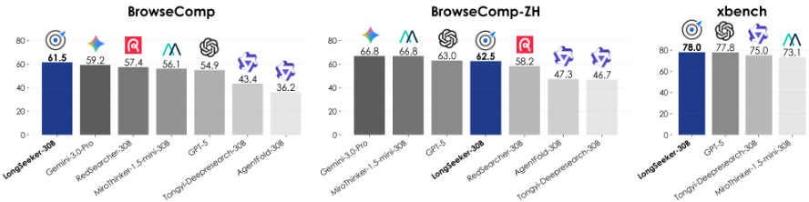
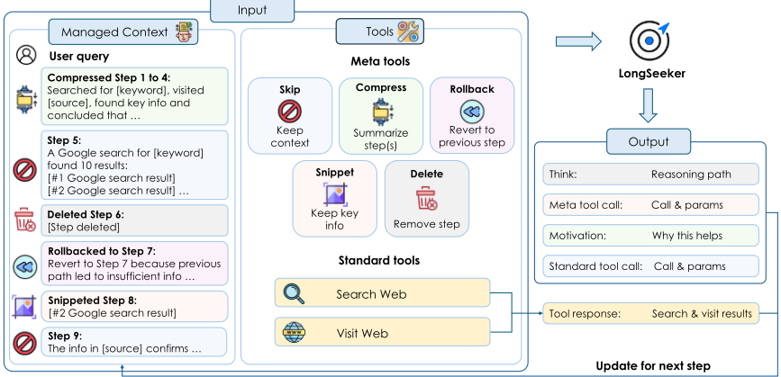
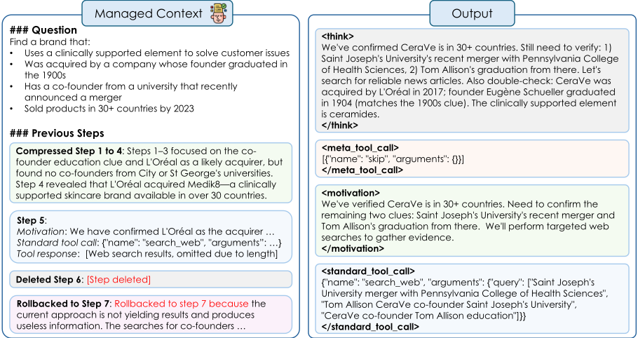
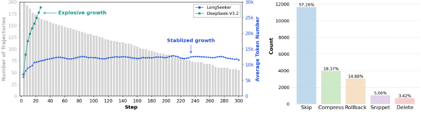
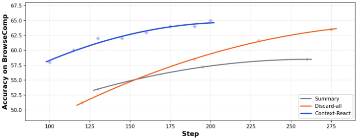
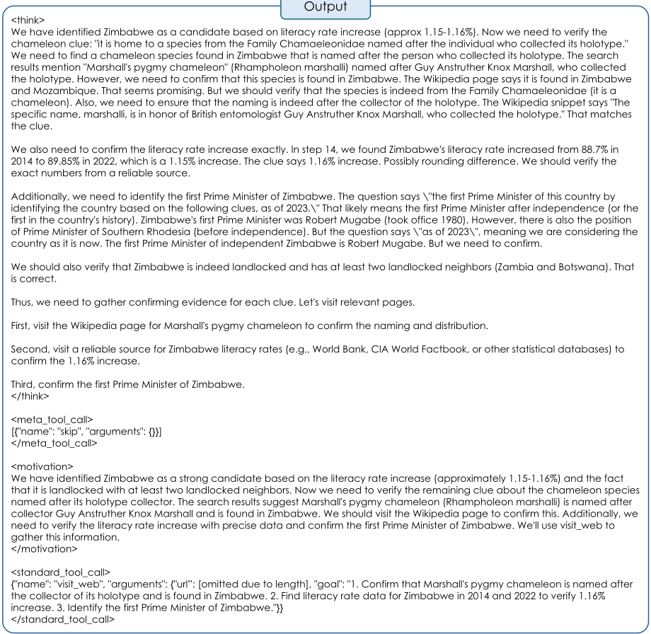

LongSeeker：面向长程搜索 Agent 的弹性上下文编排
长程搜索 Agent 在多步推理与工具调用中被动累积观察内容，导致上下文噪声增大、成本上升与错误风险。论文提出 Context-ReAct 范式，在标准 ReAct 循环中嵌入元操作层，让模型在每步与推理、工具调用一同生成 Skip/Compress/Rollback/Snippet/Delete 五种上下文操作，实现多分辨率的弹性上下文编排，并证明该操作集表达完备、专用操作可降低生成成本与幻觉风险。基于该范式，作者以 DeepSeek V3.2 为教师模型合成 1 万条带上下文管理标注的轨迹，对 Qwen3-30B-A3B 做 SFT 得到 LongSeeker。其在 BrowseComp/BrowseComp-ZH 上取得 61.5%/62.5%，显著超过 Tongyi DeepResearch 与 AgentFold，且上下文在 300 步长程下稳定在 15k token 以内；受控实验显示同一底座下 Context-ReAct 优于 Summary 与 Discard-all 两种常用上下文管理策略。
基于 ReAct 范式的长程搜索 Agent 被动累积观察、推理轨迹与工具调用，工作上下文日益嘈杂、冗余并最终超出上下文窗口。现有方案均只解决部分问题：滑动窗口截断不区分重要性、阈值触发重置破坏推理连续性、周期性摘要存在固定压缩粒度与抽象误差累积、主动整理方法（如 AgentFold、ARC）干预位置与方式受限，无法对演化的上下文形态做精确、按需的控制。
提出 Context-ReAct：在 ReAct 每步的推理轨迹与工具调用之间插入元操作层，模型在单次自回归生成中同时产出推理、上下文元操作与下一个工具调用，元操作在下一条观察追加前生效。五种原子操作：Skip（上下文已紧凑时不动作）、Compress（对任意连续历史区间做摘要，可回溯压缩早期步骤）、Rollback（回滚到早期状态并记录回溯原因与可迁移洞见，类比 DFS/MCTS 的剪枝）、Snippet（基于锚点字符串的无损子串提取，避免数值/实体/URL/代码的摘要失真）、Delete（删除无残值的步骤）。理论上证明 Compress 单独即表达完备，其余操作提供效率与保真度保证。训练上用 DeepSeek V3.2 作为教师合成 1 万条轨迹（9000 英文 + 1000 中文），对 Qwen3-30B-A3B 做标准 SFT，损失覆盖含推理、元操作、动机与工具调用的完整结构化输出。
BrowseComp 61.5%、BrowseComp-ZH 62.5%，超过 Tongyi DeepResearch（43.2%/46.7%）、AgentFold（36.2%/47.3%）、MiroThinker-1.5-mini（56.1）、IterResearch（37.3）、OpenSeeker-v1（29.5）等对比方法
xbench-2505 得分 78.0，GAIA-text（text-only 子集）得分 77.7
BrowseComp 200 题轨迹分析：上下文 token 数在 300 步长程下稳定在 15k 以内，仅占用模型 256k 最大窗口的一小部分，而 ReAct 版 DeepSeek-V3.2 上下文快速无界膨胀
受控实验（同一底座 DeepSeek-V3.2、相同配置）：在相同步数预算下，Context-ReAct 持续优于 Summary 与 Discard-all 两种上下文管理策略
元操作使用分析显示模型会用满全部五种操作，但 Snippet 与 Delete 使用频率偏低，呈保守剪枝倾向
不同于重要性无关的滑动窗口截断、破坏连续性的阈值重置、固定粒度的周期性摘要（MEM1、MemAgent），以及缺乏细粒度手术式操作、无法回溯早期历史的主动整理方法（AgentFold、ARC），Context-ReAct 定义了形式上被证明完备的五种原子元操作，与工具调用在每步共同生成而非由外部启发式触发，覆盖从无损提取（Snippet）到结构性回溯（Rollback）的完整谱系，且所有上下文管理决策从合成轨迹端到端学习，把上下文管理从外围工程技巧提升为 Agent 推理策略的核心组成部分。
相关度级别：high
命中能力域：3.1 上下文工程与记忆 | 3.3 Agent 架构与工具使用 | 3.5 评测与可靠使用
理由：直接命中 3.1（上下文窗口管理与压缩、长上下文策略、Agent 工作记忆组织）：论文核心就是 Agent 运行时的上下文编排，提出多分辨率、状态相关保真度的上下文管理原则与可操作的操作词表。同时命中 3.3（Agent loop/harness 设计、单 Agent 执行可靠性）：Context-ReAct 本质是对 ReAct agent loop 的 harness 级改造，将上下文管理内化为策略的一部分。其 Snippet 操作降低生成成本与幻觉风险、上下文稳定在 15k 内等论证也触及 3.5 的成本与效率优化及可靠性。需注意团队不训练模型，论文的 SFT 路线不能直接照搬，但元操作词表、设计原则与受控评测方法可直接迁移到团队的 Agent 工程与提示设计中。
建议动作：深入精读并做内部分享
arXiv:2605.05191v1 [cs.AI] 2026年5月6日
LongSeeker：面向长程搜索 Agent 的弹性上下文编排
Yijun Lu 1,* , Rui Ye 1,*,#,† , Yuwen Du 1 , Jiajun Wang 1 , Songhua Liu 1,† , Siheng Chen 1,†
1 上海交通大学，* 同等核心贡献，# 项目负责人 † 通讯作者：{yr991129, liusonghua, sihengc}@sjtu.edu.cn
长程搜索 Agent 在进行推理、调用工具和观察信息的过程中，必须管理快速增长的工作上下文。简单地累积所有中间内容会使 Agent 不堪重负，增加成本和出错风险。我们提出，有效的上下文管理应当是自适应的：Agent 轨迹的不同部分根据其与当前任务的相关程度，以不同的详细程度加以维护。为将这一原则付诸实践，我们提出了 Context-ReAct，这是一种用于弹性上下文编排的通用 Agent 范式，将推理、上下文管理和工具调用整合在一个统一的循环中。Context-ReAct 提供五种原子操作：Skip、Compress、Rollback、Snippet 和 Delete，使 Agent 能够动态重塑其工作上下文，保留重要证据、总结已解决的信息、丢弃无用的分支，并控制上下文大小。我们证明 Compress 算子在表达上是完备的，而其他专用算子则提供效率与保真度保证，从而降低生成成本和幻觉风险。在该范式的基础上，我们开发了 LongSeeker，这是一个基于 Qwen3-30B-A3B 在 1 万条合成轨迹上微调得到的长程搜索 Agent。在四个具有代表性的搜索基准测试（benchmark）上，LongSeeker 在 BrowseComp 上取得 61.5%、在 BrowseComp-ZH 上取得 62.5% 的成绩，大幅超越 Tongyi DeepResearch（43.2% 和 46.7%）和 AgentFold（36.2% 和 47.3%）。这些结果凸显了自适应上下文管理的潜力，表明 Agent 可以通过主动塑造其工作记忆，实现更可靠、更高效的长程推理。
https://github.com/PolarSeeker/LongSeeker https://huggingface.co/PolarSeeker/LongSeeker-30B-SFT

预印本。
搜索 Agent 的出现改变了人类从网络中检索与整合信息的方式。过去需要人工反复迭代查询的任务，如今只需一条指令即可端到端地交给 AI Agent 完成。Agent 式搜索由此成为各大 AI 实验室竞相追求的基石能力，从 OpenAI 的 Deep Research 系统（OpenAI, 2025）到当今支持基于 ReAct 范式（Yao et al., 2023）构建的多步、工具增强推理的顶级大语言模型，这一发展轨迹便是明证。
然而，基于 ReAct 范式构建的长程搜索 Agent 面临一个固有的上下文瓶颈：随着观测、推理轨迹和工具调用的不断累积，工作上下文变得日益嘈杂、冗余，最终因过长而无法完整保留。现有的补救措施都只能部分解决问题：滑动窗口截断不区分内容的重要性（Team et al., 2026）；阈值触发的重启会破坏推理的连续性（DeepSeek-AI, 2025）；周期性摘要则受困于固定粒度的压缩和不断累积的抽象误差（Zhou et al., 2025c; Yu et al., 2025; Lu et al., 2025）；而主动式整理在能够干预的位置和方式上仍然受限（Ye et al., 2025; Yao et al., 2026）。因此，现有方法无法对 Agent 上下文不断演化的形态提供精确的、按需的控制。
针对这些问题，我们的关键洞察是：有效的上下文管理需要一个弹性的工作上下文，即能够根据当前状态对 Agent 上下文的不同部分进行压缩、保留、丢弃和重组。也就是说，在长程搜索过程中，信息应随任务的演进而以不同形式存在：新产生的证据可能需要保持完整以供验证，已解决的证据可以被提炼为结论，对精度至关重要的细节可以以片段形式留存，而失败的分支则应被移除或回滚。这种依赖于状态的保真度确保 Agent 在其 Agent 式推理轨迹的每个部分上都维持恰当的细节水平。
遵循这一洞察，我们提出 Context-ReAct，一种面向长程搜索 Agent 中弹性上下文编排的通用 Agent 式范式。在每个推理轮次中，Agent 在单次自回归过程中同时生成其推理轨迹、一组上下文元操作以及下一次工具调用。这些元操作在下一条观测被追加之前执行，从而使 Agent 能够主动决定何时更新其上下文、在轨迹中的何处进行干预，以及过去的每个部分应以何种形式表示。
基于这一范式，我们设计了一个由五种原子动作构成的元操作词汇表。(1) Skip 在上下文已经紧凑且信息充分时使其保持不变。(2) Compress 用一段抽象式摘要替换任意连续范围的历史步骤。(3) Snippet 保留某一步骤中的精确子串，从而在不产生抽象失真的情况下保留对精度至关重要的证据，例如数字、实体名称、引文或代码。(4) Delete 移除不再具有残余价值的步骤。(5) Rollback 通过将上下文回退到较早状态来放弃一条无成效的分支，同时记录回溯的原因以及任何可迁移的洞见。这些操作共同维护一个多分辨率的工作上下文，其中上下文的不同部分可以逐字保留、被压缩、被部分引用、被移除，或在结构上被回退。尽管简单，这一操作集已被证明是表达完备的：仅凭 COMPRESS 在原则上即可模拟所有其他操作，而各专用算子则通过显式的效率与保真度保证来降低生成成本与幻觉风险。
为了实例化并评估 Context-ReAct，我们构建了 LongSeeker——一个从 Qwen3-30B-A3B 出发、在 1 万条合成搜索轨迹上微调得到的长程搜索智能体。我们在四个具有代表性的搜索基准测试（benchmark）上评估 LongSeeker：BrowseComp (Wei et al., 2025b)、BrowseComp-ZH (Zhou et al., 2025a)、xbench (Chen et al., 2025) 和 GAIA (Mialon et al., 2023)。LongSeeker 在 BrowseComp 和 BrowseComp-ZH 上分别取得 61.5% 和 62.5% 的分数，显著优于 Tongyi DeepResearch（43.2% 和 46.7%）(Team et al., 2025) 与 AgentFold（36.2% 和 47.3%）(Ye et al., 2025) 等具有竞争力的基线。这些结果表明，弹性上下文编排是通往更强长程智能体的一条可扩展路径，它将上下文管理从一种外围的工程启发式方法转变为智能体推理的核心组件。
2
我们的主要贡献如下：
搜索智能体。基于大语言模型（LLM）的搜索智能体已将信息检索从静态的查询-响应匹配转变为动态的多步推理过程。这一转变的核心是 ReAct 范式（Yao et al., 2023），它将智能体行为结构化为推理、动作执行与观察整合的迭代循环。OpenAI 的 Deep Research（OpenAI, 2025a）开创了完全闭源的路线，随后涌现出一系列专有智能体；与此同时，WebSailor（Li et al., 2025）和 Tongyi DeepResearch（Team et al., 2025）等开源工作则通过大规模轨迹合成与后训练优化不断推动能力向前发展。然而，这些进展仍保留着一个根本性的局限：它们遵循传统的 ReAct 模式，无条件地累积观察结果，导致上下文质量逐步退化，并加剧了长程任务中超出上下文窗口的风险。
面向智能体的上下文管理。管理不断增长的上下文近来受到了相当多的关注，现有方法可分为四类。滑动窗口启发式方法——例如 MiroThinker 系列（Team et al., 2026）所采用的 keep-last-k——仅保留最近的步骤，并不论重要性如何一律丢弃较旧的内容；而全部丢弃（discard-all）变体则在达到阈值后清空整个上下文，如 DeepSeek-V3.2（DeepSeek-AI, 2025）和 GLM-4.7（Zhipu AI, 2025）。诸如 MEM1（Zhou et al., 2025c）之类的周期性摘要方法训练智能体维持紧凑的内部状态，并在多跳问答（QA）任务上取得出色表现；而 MemAgent（Yu et al., 2025）则使用固定大小的内存缓冲区分段处理文档。诸如 AgentFold（Ye et al., 2025）和 ARC（Yao et al., 2026）之类的主动式整理方法使智能体能够主动决定压缩什么内容以及何时压缩，但它们仍然缺乏手术式的精细操作，且无法回溯更早的历史来清除过时内容。
我们的方法。Context-ReAct 通过定义一组形式上完备的五种原子元操作——Skip、Compress、Rollback、Snippet 和 Delete——超越了先前的工作，这些操作在每一步都与标准工具调用一同生成。与固定规则的截断不同，每个决策都是内容感知的；与周期性摘要不同，操作仅在必要时才被调用；与主动式整理不同，我们的操作集已被形式化证明是完备的（第 3 节），并且覆盖了从无损提取到结构化回溯的完整谱系。所有决策均从合成的长程搜索轨迹中端到端地学习得到。
我们提出 Context-ReAct，这是一种通用范式，它通过一个显式的元动作层来增强标准 ReAct 循环，以实现按需的上下文管理。如图 2 所示，我们的方法使 Agent 能够与标准推理和工具调用一同生成元操作，从而主动整理其工作记忆。第 3.1 节给出形式化定义；第 3.2 节定义五种原子元操作；第 3.3 节证明表达完备性；第 3.4 节详细介绍数据合成与训练流程。
3

在本节中，我们通过形式化定义来介绍所提出的 Context-ReAct。
标准 ReAct。在标准 ReAct 范式（Yao et al., 2023）中，每一步 S std i 定义为
其中 r i 是思维链（CoT）推理轨迹，c i 是工具调用，o i 是工具返回的环境观测。时刻 t 的上下文历史为拼接而成的 H t = [ S std 1 , . . . , S std t ]，在这种只追加（append-only）的设计下，它单调且无界地增长。随着无关观测的不断累积，H t 的信噪比逐渐下降，| H t | 最终面临超出模型上下文限制的风险。
Context-ReAct。为了在保持标准 ReAct 范式通用性的同时赋予 Agent 动态上下文管理能力，我们在推理轨迹与标准工具调用之间插入若干元操作，以此对每一步进行增强。由此得到的步骤结构为
其中 M i = [ op ( i ) 1 , op ( i ) 2 , . . . , op ( i ) k ] 是由 Agent 生成的一列元操作，用于在下一步开始之前对上下文进行变换。形式化地，在第 t + 1 步所使用的有效上下文 H ′ t 为
其中 T 是 M t 中各个操作的复合，每个操作均取自原语集合（在第 3.2 节中定义）。这一机制使 Agent 无需任何外部触发或架构修改，便能维持紧凑且相关的工作记忆（在典型的长程任务中 | H ′ t | ≪ | H t |）。
其设计原则是：元操作与推理轨迹和工具调用在单一的端到端生成步骤中协同生成，而非由诸如长度阈值之类的外部启发式规则所触发。因此，Agent 将何时、何地以及如何干预自身上下文作为其策略的有机组成部分加以学习；参见图 2（右）的图示。
4
为了实现对工作上下文灵活且任务感知的管理，Context-ReAct 为 Agent 提供了一组原子元操作。这些操作定义了在每个推理步骤中可应用于上下文的全部原始动作。在下文中，令 H = [ S 1 , . . . , S n ] 表示当前历史。
(1) SKIP 是恒等算子。也就是说，Agent 不对上下文采取任何动作：
该操作在当前上下文已经紧凑时被发出，不产生任何额外的生成开销。
(2) COMPRESS 对任意连续的步骤区间 [ a, b ] ( a ≤ b ) 执行抽象式摘要，用一个摘要后的步骤 S a : b 替换上下文，其中 Σ 为摘要后的字符串：
至关重要的是，[ a, b ] 不必是最近的窗口（Ye et al., 2025）：Agent 能够回溯性地识别出轨迹早期的步骤已变得可压缩。例如，一旦早期搜索中的有用信息已被后续证据捕获，这些搜索可能就不再需要完整保留，从而使 Agent 能够即时地对其进行压缩。这种回看式的灵活性是滑动窗口方法所不具备的，后者只能从历史的一端进行截断。
(3) ROLLBACK 通过丢弃所有后续步骤 S k , . . . , S n 并追加一个记录回溯原因及任何可迁移洞见的摘要步骤，将上下文回退至第 k 步：
ROLLBACK 刻画了基于树的搜索（深度优先搜索 DFS/蒙特卡洛树搜索 MCTS）中分支舍弃的结构性直觉（Shi et al., 2025）：当 Agent 识别出某条推理路径已走入死胡同时，它会丢弃失败的子轨迹，同时保留其因果解释，从而避免重复犯同样的错误。
(4) SNIPPET 用由锚点字符串 pre 和 suf 所界定的逐字子串替换第 k 步的观测 o k ：
与生成式摘要不同，SNIPPET 对于被保留的片段是无损的：它执行基于指针的子串抽取，而非重新生成 token，从而节省 token 开销，并避免对必须被精确传递的数值、实体名称、URL 或代码产生幻觉。
(5) DELETE 移除第 k 步，丢弃其推理轨迹、工具调用和观测：
当整个步骤不包含任何信息且不留下任何有用痕迹时，该操作是适用的——例如一个失败或冗余的查询，其结果、推理和调用都值得被完全移除以降低噪声。
复合应用。多个元操作可以通过在 M i 中按顺序列出而在单个步骤内进行组合。这种可组合性使得 LongSeeker 能够在一步之内，例如，DELETE 一个含噪的交互步骤，同时 COMPRESS 一段较长的历史片段。
图 3 展示了这些元操作在一条实际运行轨迹上的综合效果（完整示例参见附录 A）。模型看到的并非完整的原始轨迹，而是其历史的一个紧凑且经过精心整理的视图。如图左半部分所示，步骤 1-4 已通过 COMPRESS 被合并为一句摘要，在保留关键发现的同时丢弃了冗长的中间观察。步骤 5 通过 SKIP 保持不变。步骤 6 已被 DELETE，以消除冗余查询带来的噪声。最为关键的是，轨迹已被 ROLLBACK 至步骤 7，丢弃了一段无成效的探索子链。由此得到的管理后上下文极为精简却信息密集，确保模型能够专注于剩余尚未解决的子问题。
5

我们现在通过一个简单的推导来分析它们的理论性质，以论证 Context-ReAct 动作集在完备性与实用价值两方面的合理性。
定理 3.1（表达完备性）。元动作集 O = { SKIP, COMPRESS, ROLLBACK, SNIPPET, DELETE } 是表达完备的：对任意 H in、H target ∈ H，存在一个由 O 中操作构成的有限序列，可将 H in 变换为 H target。
证明。只需证明仅凭 COMPRESS 自身就是 H 上的一个通用字符串重写算子即可。根据定义，COMPRESS(H, 1, |H|, Σ) 会用任意字符串 Σ ∈ V∗ 替换整个历史 H。令 Σ = H target，即可通过单次操作得到 H′ = H target。由于 O 中的单个元素即可从任意源到达任意目标，因此整个集合 O 显然是完备的。
尽管仅凭 COMPRESS 已足以保证理论上的完备性，但其余四个算子通过引导 Agent 更高效、更可靠地管理上下文，提供了实用的结构。每个算子都应对一种不同的操作需求：
6
总而言之，这五个原子元操作可以被解释为在所有可能上下文空间的不同子空间上进行的专门化变换。通过以这种方式对上下文变换空间进行划分，Agent 能够在整个长程推理过程中维持一个紧凑、相关且可靠的工作上下文。这种结构化分解也与最小描述长度（Minimum Description Length, MDL）原理（Rissanen, 1978; Grunwald, 2004）相一致，为这些专门化算子之所以在实践中有益提供了理论依据。
轨迹合成。通过 Context-ReAct 训练 LongSeeker 所需的轨迹不仅要包含正确的最终答案，还要包含中间步骤中高质量的上下文管理决策——这一监督信号在所有现有数据集中均不存在。我们通过一个两阶段流水线构建了包含 10,000 条标注轨迹的语料库。
阶段 1：种子问题收集。我们从 OpenSeeker (Du et al., 2026b,a) 中采样 10,000 个复杂的多跳问题，由 9,000 个英文问题和 1,000 个中文问题组成，并筛选出需要实质性多步推理才能回答的问题。
阶段 2：Context-ReAct 轨迹展开。每个问题都由 DeepSeek V3.2 (DeepSeek-AI, 2025) 作为教师模型、在完整的 Context-ReAct 范式下运行来求解。在每一步，教师模型在单次生成中直接产生完整的四字段结构化输出——<think>、<meta_tool_call>、<motivation> 和 <standard_tool_call>——从而联合产生上下文管理决策和下一个工具调用。格式正确的轨迹构成最终训练集。
监督微调。我们通过标准的下一词元预测在标注语料库上对 Qwen 3 30B-A3B (Yang et al., 2025) 进行微调：
其中 x^{(t)} 是第 t 步的完整结构化输出——包括思维链（chain-of-thought, CoT）、元工具调用、动机和标准工具调用——而 H′_{t-1} 是应用上一步的元操作之后的上下文。在整个结构化输出上计算损失，迫使模型联合学习应调用哪个元操作、何时调用该操作，以及在给定当前上下文的情况下如何使用标准工具。
评估。我们在四个关键基准测试（benchmark）上评估我们的 LongSeeker，这些基准测试涵盖定向信息获取与通用 Agent 能力。BrowseComp (Wei et al., 2025a) 和 BrowseComp-ZH (Zhou et al., 2025b) 分别在英文和中文上评估多步导航与困难信息检索（由于资源限制，从每个基准测试中抽取 200 个问题）。xbench (Chen et al., 2025) 评估复杂的深度研究能力，包括在与职业对齐的真实世界任务上进行规划、推理和综合。最后，GAIA (Mialon et al., 2023)（纯文本子集）评估需要结合网页浏览、工具调用和多步推理的通用 Agent 能力。我们将所有基准测试的最大工具调用次数设为 300。对于 BrowseComp 和 BrowseComp-ZH，我们遵循 MiroThinker (Team et al., 2026) 的做法，同样应用 discard-all 技术并允许最多进行 5 轮。
7
| Model | Param | Training | BrowseComp | BrowseComp-ZH | xbench-2505 | GAIA-text |
|---|---|---|---|---|---|---|
| Foundation Model with Tools | Foundation Model with Tools | Foundation Model with Tools | Foundation Model with Tools | Foundation Model with Tools | Foundation Model with Tools | Foundation Model with Tools |
| GPT-5 | - | - | 54.9 | 63.0 | 77.8 | 76.4 |
| Gemini-3.0-Pro | - | - | 59.2 | 66.8 | - | 74.8 |
| Claude-Opus-4.5 | - | - | 67.8 | 62.4 ∗ | - | 71.5 |
| Seed-2.0-Pro | - | - | 77.3 | 82.4 | - | 78.6 |
| DeepSeek-V3.2 | 671B | - | 67.6 | 65.0 ∗ | 78.0 | 75.1 |
| GLM-4.7 | 358B | - | 67.5 | 66.6 ∗ | 72.0 | - |
| Search Agent | Search Agent | Search Agent | Search Agent | Search Agent | Search Agent | Search Agent |
| MiroThinker-1.7-mini | 30B | CPT + SFT + RL | 67.9 | 72.3 | - | 80.3 |
| MiroThinker-1.5-mini | 30B | CPT + SFT + RL | 56.1 | 66.8 | 73.1 | 72.0 |
| RedSearcher | 30B | CPT + SFT + RL | 57.4 | 58.2 | - | 80.1 |
| IterResearch | 30B | SFT + RL | 37.3 | 45.2 | 71.0 | 72.8 |
| AgentFold | 30B | SFT | 36.2 | 47.3 | - | 67.0 |
| Tongyi-DeepResearch | 30B | CPT + SFT + RL | 43.4 ∗ | 46.7 ∗ | 75.0 | 70.9 |
| OpenSeeker | 30B | SFT | 29.5 ∗ | 48.4 ∗ | 74.0 | - |
| LongSeeker | 30B | SFT | 61.5 | 62.5 | 78.0 | 77.7 |
| Model | Param | Training | BrowseComp | BrowseComp-ZH | xbench-2505 | GAIA-text |
基线。为了验证 LongSeeker 的有效性，我们将其与若干最先进的系统进行比较，这些系统分为两类：（1）配备工具的基础模型，包括 GPT-5 (OpenAI, 2025b)、Gemini-3.0-Pro (Google DeepMind, 2025)、Claude-Opus4.5 (Anthropic, 2025) 和 Seed-2.0-Pro (ByteDance Seed Team, 2026) 等前沿专有系统，以及开放权重模型 DeepSeek-V3.2 (DeepSeek-AI, 2025) 和 GLM-4.7 (Zhipu AI, 2025)；（2）搜索 Agent，它们作为 30B 参数规模下可直接对比的基准，包括 MiroThinker 系列 (Team et al., 2026)、REDSearcher (Zheng et al., 2026)、IterResearch (Chen et al., 2026)、AgentFold (Ye et al., 2025)、Tongyi-DeepResearch (Team et al., 2025) 和 OpenSeeker (Du et al., 2026b)。这一多样化的基线集合涵盖了当代 Agentic 搜索中的代表性范式。所有基线结果均来自官方发布或公开可用的评估平台。
Main results. Table 1 presents the primary evaluation results on BrowseComp and BrowseComp-ZH. LongSeeker achieves 61.5 on BrowseComp and 62.5 on BrowseComp-ZH, establishing strong performance among 30B-scale open-source search agents. Notably, LongSeeker exceeds MiroThinker-1.5-mini (56.1), Tongyi-DeepResearch (43.4), IterResearch (37.3), AgentFold (36.2), and OpenSeeker-v1 (29.5). Extending evaluation to xbench and GAIA, LongSeeker achieves 78.0 on xbench-2505 and 77.7 on GAIA-text. These scores confirm that the benefits of Elastic Context Orchestration generalize beyond purely informationseeking tasks to broader agent capabilities, with LongSeeker establishing competitive performance across diverse benchmark suites.
Context growth dynamics. To empirically validate the efficacy of our context management paradigm, we trace the trajectory length and corresponding context token count across 200 questions sampled from BrowseComp. As depicted in Figure 4a, we plot the surviving trajectories at each turn alongside their
8
30k

average accumulated context tokens. Unlike ReAct-based DeepSeek-V3.2, which suffers from rapid, unbounded context inflation as observations are passively appended step-by-step, LongSeeker maintains a remarkably stable and concise working memory. The token count initially scales with the problem depth but soon reaches a plateau, staying under 15k tokens even at extended horizons of 300 steps.
This stabilized growth is a direct consequence of our complete and fi ne-grained meta-operations: rather than accumulating noise, the model learns to dynamically purge failed branches (ROLLBACK), discard irrelevant retrievals (DELETE), extract only essential snippets (SNIPPET), and abstract verbose history (COMPRESS). Consequently, the context remains highly compact and information-dense. LongSeeker delivers competitive performance on long-horizon benchmarks while utilizing only a fraction of the underlying model's maximum 256k context window. This vast remaining capacity leaves ample headroom for tackling longer and more complex exploratory tasks. This confirms that the model has internalized how to efficiently deploy our atomic meta tools, retaining critical reasoning signals while minimizing distracting noise.
Meta-operation usage. Figure 4b shows the usage distribution of the five meta-operations of LongSeeker. We observe that LongSeeker effectively leverages the full set of atomic operationsSkip , Compress , Rollback , Snippet , and Delete -across trajectories, suggesting that it has acquired a robust strategy for invoking and composing meta-operation to handle complex long-horizon tasks. This ability to coherently and purposefully navigate the context-manipulation space contributes to its strong overall performance.
我们还观察到一种轻微的不均衡现象，即 Snippet 和 Delete 的使用频率较低。这可能源于长程搜索的特性：在过程早期，难以有把握地识别无关信息，因此 LongSeeker 倾向于保留更多上下文，并采取保守的剪枝策略。
上下文管理策略对比。为评估 Context-ReAct 范式的有效性，我们在统一设置下于 BrowseComp 上开展了受控实验，其中所有方法均构建于同一基座模型（DeepSeek-V3.2）之上，并共享完全相同的配置。我们将 ContextReAct 与 DeepSeek-V3.2 (DeepSeek-AI, 2025) 中采用的两种常用上下文管理策略进行比较：(1) Summary，它将溢出的轨迹压缩为摘要，并从精简后的上下文恢复 rollout；(2) Discard-all，它通过移除所有先前的工具调用历史来重置上下文，类似于以全新上下文重新初始化。如图 5 所示，Context-ReAct 在相同的步数预算下始终取得最高性能，证明了其凭借弹性上下文控制在长程任务中的卓越有效性，该控制能够在整个扩展轨迹中实现对上下文的自适应管理与利用。
9

我们提出了 Context-ReAct，这是一种用于弹性上下文编排的通用智能体范式，使智能体能够在每一步联合生成推理、上下文元操作和工具调用。Context-ReAct 定义了五种原子操作：Skip、Compress、Rollback、Snippet 和 Delete。这些操作共同提供了一套完整且细粒度的机制，可对不断演进的工作上下文进行多分辨率控制。我们基于该范式训练了 LongSeeker-30B，并在长程搜索基准测试上展现出具有竞争力的性能，尤其是在 BrowseComp 上显著超越了 Tongyi DeepResearch 和 AgentFold。我们的实验从实证角度验证了，与仅追加（append-only）或粗粒度截断方法相比，应用这些原子工具能够实现显著更紧凑、更高效的上下文管理，从而在长程任务中保持持续的高性能，并在应对更困难任务方面具有强大潜力。
未来工作。我们当前的实现基于合成轨迹进行监督微调（SFT），未采用拒绝采样或高级探索策略。一个方向是应用强化学习（RL）来优化元操作的使用，使智能体能够探索动作空间。此外，我们将 Context-ReAct 视为一种基础性架构范式，而非仅针对搜索的专用解决方案。其状态依赖保真度的核心理念本质上与领域无关，为其他长程挑战提供了可扩展的蓝图，例如自主软件工程、大规模法律证据开示和多模态科学推理等，在这些场景中，流畅重构海量工作上下文的能力至关重要。
图 6 展示了应用元操作后受管理的上下文，图 7 展示了 LongSeeker 相应的结构化输出。
:B
14

15
2 条证据未在原文中核对到